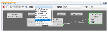
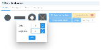
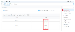
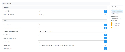
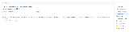

6.5 Touch Peripheral
Capacitive Voltage Divider (CVD), also known as the Touch peripheral module, to the
application by following these steps.
- Download and install the Harmony 3 Dependencies, which include the touch library required for configuration and code generation related to the Touch peripheral module. For more details, refer to Install Harmony 3 Dependencies from Related Links section.
- In the Project Graph, the user must add the Touch component.Note: The use can adjust the available settings for the touch library and any related components as per the requirement.
- Upon code generation, the user can access the code generated for the touch library and related components.
- The BLE Transparent UART with Touch peripheral application example is available
in the
wireless_apps_pic32_bz6/apps/ble/peripheral_applications/touch_peripheral_trp_uart. For more details, see BLE + Touch Transparent UART from Related Links.
MCC Component Addition
The following are the steps to add the Touch library to any Bluetooth® Low Energy or Zigbee® application.
- Add Touch Library middleware with
needed components:
- Touch Component:
From the “Touch” drop-down, Click + next to the Touch
Library middleware from the available resource list to the
Project Graph tab.
Figure 6-23. Adding Touch Component - RTC Component: A
pop-up window appears asking for auto-activation of RTC component. Click
Yes.
Figure 6-24. RTC Component Auto-Activation - ADCHS Component: A
pop-up window appears asking for auto-activation of ADC component and
components automatic connection. Click Yes.
Figure 6-25. ADC Component Auto-Activation
- Touch Component:
From the “Touch” drop-down, Click + next to the Touch
Library middleware from the available resource list to the
Project Graph tab.
- The project graph contains Touch Library, RTC and ADCHS.
- Launch Touch Configurator:
Touch parameters can be configured via a custom UI in MCC. To launch the Touch
Configurator by performing the following steps:
- From the “Plugins:” drop-down list, select Touch
Configuration.
Figure 6-26. Selecting Touch Configuration 
- The following Touch Configuration pop-up window appears.
Figure 6-27. Touch Configuration Window
- From the “Plugins:” drop-down list, select Touch
Configuration.
- Choose Technology and Add Sensor: For this example QT7 Touch Xplained Pro
is considered. QT7 Self Capacitance Xplained Pro Extension Kit has two touch
buttons and one slider sensor.
- The technology in use is the self capacitance sensing technology.
- In the Create tab, enter 1 in the “Buttons” filed.
Figure 6-28. Adding Buttons Note: This example uses only one button available on QT7 board. - Add Slider: Click the Slider icon. QT7 slider has 3 channels.
- In the Create tab, enter 3 in the “Segments” filed. Click
Add.

- Click the Configure tab
which allows to configure touch properties such as:
- Sensor Pins:Tip: Refer to the Curiosity board XPRO extension and QT7 Xplained Pro documents for connection details.
- For more details, refer to the PIC32-BZ6 Curiosity Board User's Guide (DS00006006) in Reference Documentation from Related Links.
- QT7 Xplained Pro Design Files. For more details on the design files, refer to the ATQT7-XPRO QT7 Xplained Pro Extension Kit in Reference Documentation from Related Links.
- According on the design files, the user must select the correct
Y-Signals lines for buttons and slider as follows.
Figure 6-29. Selection of -Signals Lines 
- Sensor Parameter
tab allows to configure touch channel properties such as:
- Oversamples (filter level)
- Digital Gain
- Analog Gain
- Series Resistor
- CSD (additional cycles)
- Prescaler
- Threshold
- Hysteresis
- AKS_GROUP (adjacent key suppression)
- Common Parameters
tab allows to configure the following:
- Acquisition tab allows the following configuration
changes:
- Scan Rate
- Acquisition Frequency
- Sensor: tab allows to configure sensor parameters such
as:
- Detect Integration
- Away from Touch Recalibration Count
- Away from Touch Recalibration Threshold
- Touch Drift Rate
- Away from Touch Drift Rate
- Drift Hold Time
- Re-burst mode
- Max on Duration
Figure 6-30. Acquisition and Sensor Parameters 
- Acquisition tab allows the following configuration
changes:
- Driven Shield tab allows to configure the following:

- Sensor Pins:
For more details on different Touch configuration parameters, refer to QTouch Modular Library Peripheral Touch Controller User’s Guide (DS40001986) in Reference Documentation from Related Links.
Application Development
The MCC code generation generates the touch_example.c, which includes
the sample application implementation. The touch_mainloop_example() API
implements the periodic touch measurement initiation. The task handler in
app.c needs to call this API .
The following are the steps to include touch application functionality:
- In order to go in sync with wireless task and application task, touch message to
be posted in application task queue whenever the periodic RTC timerhanlder is
triggered. Add the highlighted code in
touch_timer_handler()oftouch.c.void touch_timer_handler(void) { APP_Msg_T appMsg; time_to_measure_touch_var = 1u; qtm_update_qtlib_timer(DEF_TOUCH_MEASUREMENT_PERIOD_MS); appMsg.msgId = APP_MSG_TOUCH_MEAS; OSAL_QUEUE_SendISR(&appData.appQueue, &appMsg); }
- Add the
APP_MSG_TOUCH_MEASmessage ID inAPP_MsgId_Tofapp.h.typedef enum APP_MsgId_T { APP_MSG_BLE_STACK_EVT, APP_MSG_TOUCH_MEAS, APP_MSG_STACK_END } APP_MsgId_T; - The application task needs to
call the
touch_mainloop_example()API to perform periodic measurement of touch inputs.case APP_STATE_SERVICE_TASKS: { if (OSAL_QUEUE_Receive(&appData.appQueue, &appMsg, OSAL_WAIT_FOREVER)) { if(p_appMsg->msgId==APP_MSG_BLE_STACK_EVT) { // Pass BLE Stack Event Message to User Application for handling APP_BleStackEvtHandler((STACK_Event_T *)p_appMsg->msgData); } else if(p_appMsg->msgId== APP_MSG_TOUCH_MEAS) { Touch_MainLoop() } - The user can customize the
Touch_Mainloopto perform the needed functions by reading the touch input status when themeasurement_done_touchis set.